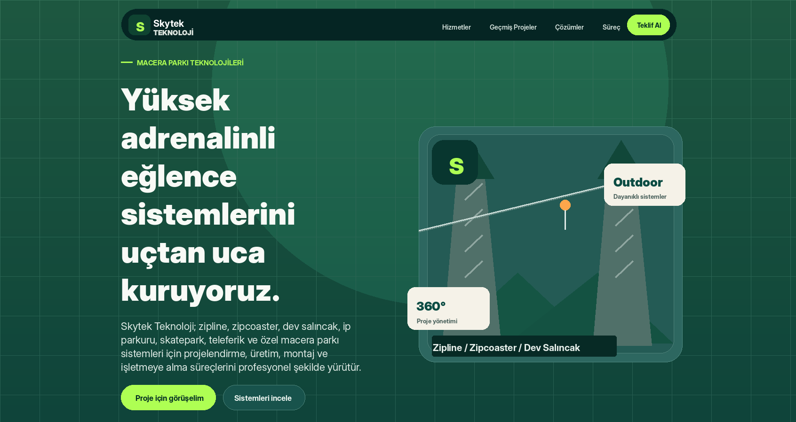

Proje ihtiyacı
Teknik ve büyük ölçekli hizmetlerde ziyaretçi güven ister. Hizmetlerin ne olduğu, hangi alanlarda kullanıldığı ve firmayla nasıl iletişime geçileceği net görünmelidir.
Skytek; zipline, zipcoaster, dev salıncak, ip parkuru ve benzeri büyük ölçekli eğlence sistemlerini profesyonel şekilde tanıtan kurumsal web sitesi olarak planlandı.

Teknik ve büyük ölçekli hizmetlerde ziyaretçi güven ister. Hizmetlerin ne olduğu, hangi alanlarda kullanıldığı ve firmayla nasıl iletişime geçileceği net görünmelidir.
Her hizmet için ayrı detay sayfası, güçlü görsel alanları ve kurumsal iletişim akışı olan bir yapı tasarlandı.